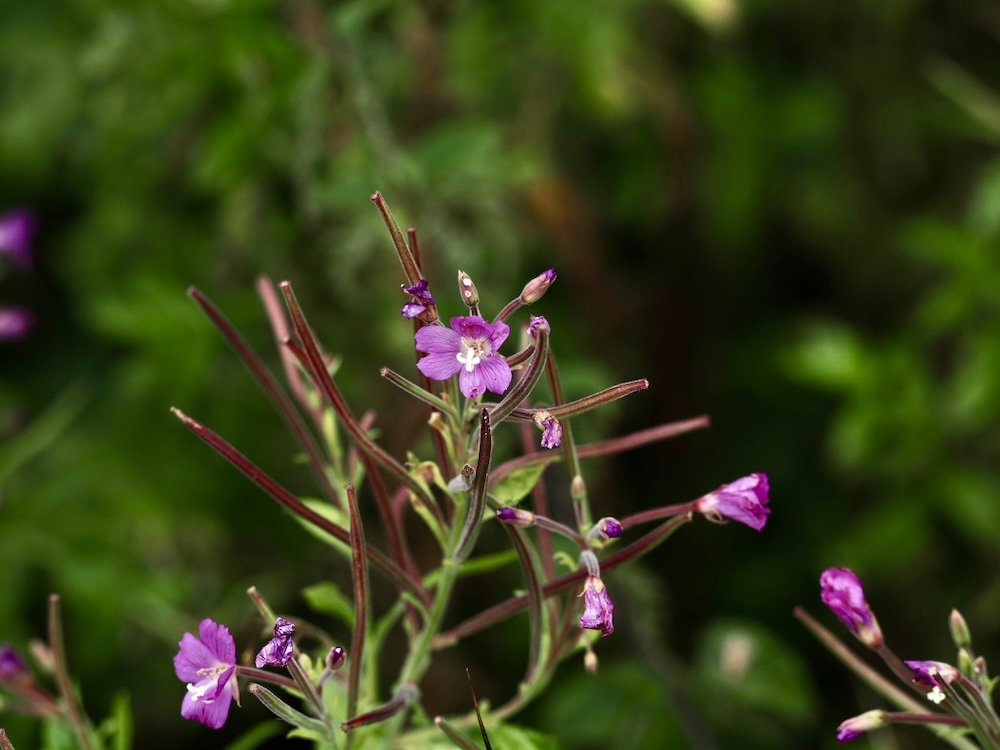
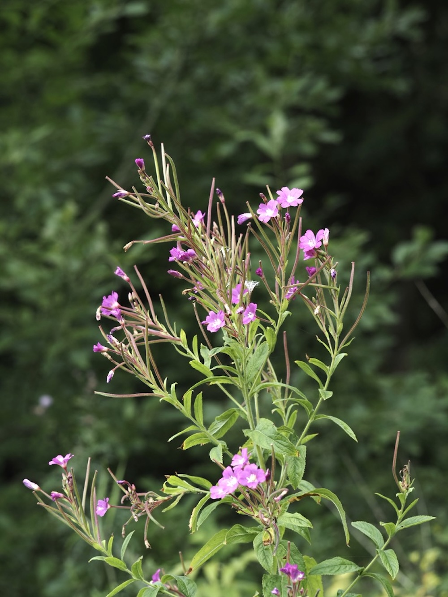

Üppige rosa Wolken am Bachufer — der Riese unter den Weidenröschen.



Pfriemförmige Samenkapseln
Wie alle Weidenröschen produziert auch das Zottige lange, schlanke Samenkapseln, die sich bei der Reife in vier Klappen aufrollen. Aus ihnen werden tausende winzige, behaarte Samen frei, die wie Federchen davonfliegen. Eine einzige Pflanze kann pro Saison über 80.000 Samen freisetzen — daher die schnelle Ausbreitung an gestörten Standorten.
Unterscheidung der Weidenröschen
Mit etwa zehn heimischen Arten ist die Gattung Epilobium nicht ganz einfach. E. hirsutum erkennt man an: dichter Behaarung von Stängel und Blättern, deutlich größeren Blüten (1,5–2 cm) und der charakteristisch weißen, vierspaltigen Narbe in der Blütenmitte. Die kleineren E. roseum oder E. parviflorum haben deutlich kleinere Blüten.
Wissenswertes & Merksätze
Erkennungszeichen
Kräftiger, kantiger Stängel mit langer abstehender Behaarung. Blätter gegenständig, lanzettlich, am Stängel teilweise herablaufend. Blüten purpurrosa, vier Blütenblätter, Narbe weiß und vierspaltig.
Wasserzeiger
E. hirsutum braucht ständig feuchten Boden — Bachufer, Gräben, Auwälder. Sein massenhaftes Auftreten zeigt nährstoffreiche, nasse Standorte, oft auch Eutrophierung.